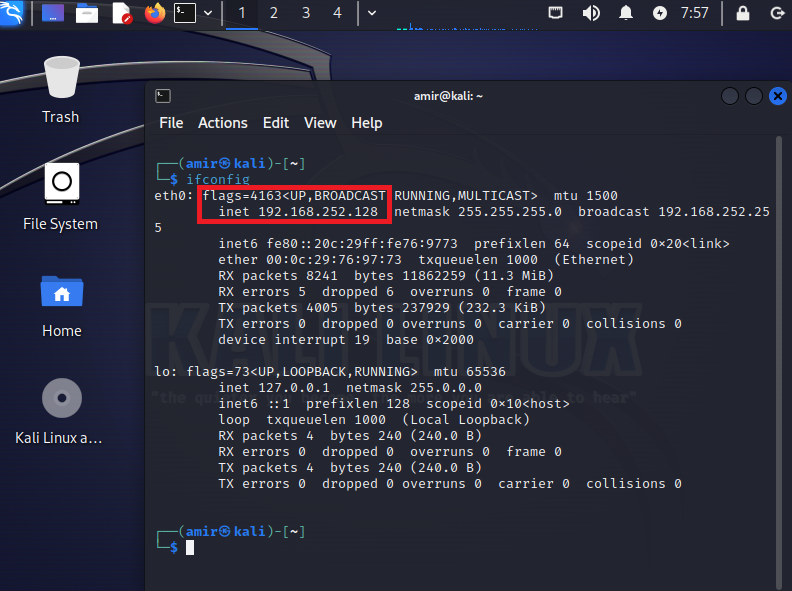
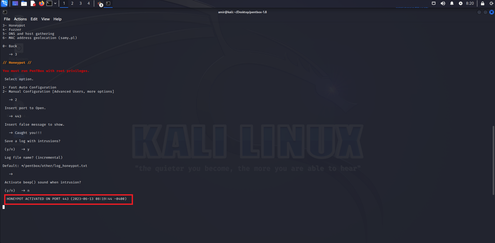
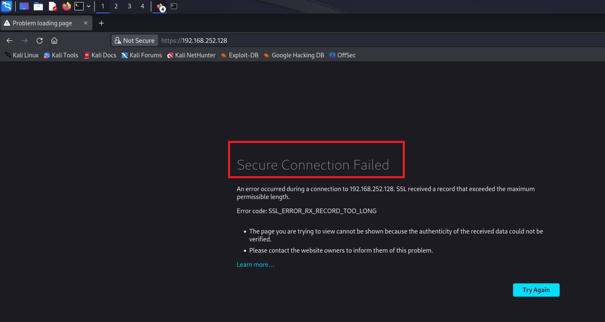
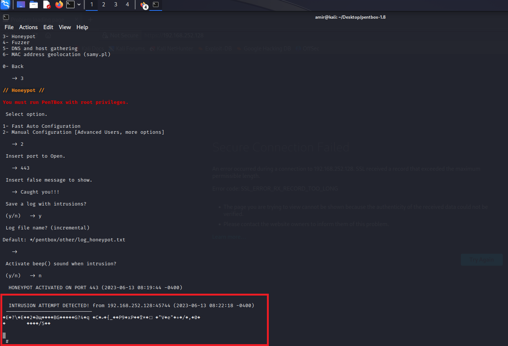

The page outlines the process of deploying a honeypot using Pentbox, a penetration testing tool, within the Kali Linux operating system. The honeypot is designed to attract potential attackers, gather information about their techniques, and enhance overall network security. The images and information below highlight the steps taken to acheive this
When you run the ifconfig command in a terminal, it displays information about the active network interfaces on your system, such as Ethernet adapters (e.g., eth0) or wireless interfaces (e.g., wlan0). The output includes details about the network interface configuration, including the IP address, MAC address, network mask, broadcast address, and other relevant parameters.
Once this address is determined, we can move on to changing the directory to the pentbox package. After this, we can run the ruby file for pentbox and follow the instructions. After setting the port, we should see the terminal window success message like the one below.
After this, we can attempt to attack the honeypot. This is done by attempting to access the address we noted earlier form the ifconfig. In this case it was 192.168.252.128. Once this is complete, we get the message indicating a failure to get a secure connection.
As we attempt to access the honeypot, we also get a message in the terminal indicating there was an attack attempt on the honeypot. this is also stored in the log file, which will be in the default location specified earlier.
Setting up a honeypot using Pentbox in Kali Linux was an enlightening experience that provided valuable insights into the world of network security. This reflective piece aims to encapsulate my journey, observations, and personal growth throughout this endeavor. From the outset, the notion of deploying a honeypot intrigued me. The opportunity to create an enticing environment to observe and analyze potential attacks ignited my curiosity. As I delved into the installation and configuration process, I realized the importance of having a solid foundation in Kali Linux. It required attention to detail and a meticulous approach to ensure the proper setup of both the operating system and Pentbox itself. Throughout this project, I encountered one main challenge that pushed me to expand my knowledge and problem-solving skills. The default pentbox package had been long since deprecated and I had to go online to look for a version that I could use.
One of the most significant takeaways from this experience was the realization of the constant evolution and sophistication of cyber threats. The observations made within the honeypot environment shed light on emerging attack vectors and emphasized the necessity of proactive security measures. The exercise served as a reminder that vigilance and continuous improvement are essential in the ever-changing landscape of cybersecurity. Moreover, this honeypot deployment demonstrated the importance of ethical considerations in cybersecurity practices. Obtaining appropriate permissions and adhering to legal and ethical boundaries are crucial when conducting activities that involve potentially sensitive or vulnerable systems. In conclusion, the process of setting up a honeypot using Pentbox in Kali Linux provided an eye-opening exploration into the realm of network security. The exercise broadened my understanding of potential threats, enhanced my technical skills, and deepened my appreciation for the importance of proactive defense measures. This hands-on experience has undoubtedly contributed to my growth as a cybersecurity enthusiast, leaving me eager to continue exploring and contributing to the ever-evolving field of information security.